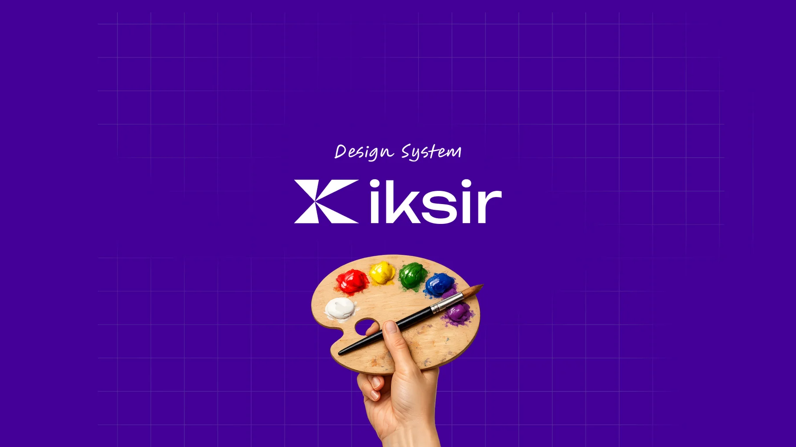

نظام تصميم إكسير Iksir Design System Design System Iksir
أساس تصميم قائم على الرموز (Tokens) تبني عليه منتجات داتاماستر على الويب والموبايل، متّسق، متاح للجميع، وثلاثي اللغة من أول يوم. A token-first design foundation that Datamaster's web and mobile products build on, consistent, accessible, and trilingual from day one. Une fondation design token-first sur laquelle s'appuient les produits web et mobile de Datamaster, cohérente, accessible et trilingue dès le premier jour.

المشكلة The problem Le problème
منتجات تكبر بلا لغة مشتركة A growing product suite with no shared language Une gamme de produits qui grandit sans langage commun
تبني داتاماستر نظام ERP معياريّاً وعائلة تطبيقات موبايل تحت علامة منتجاتها «إكسير». ومع توسّع هذه العائلة، صارت كل شاشة تحلّ نفس مشاكل الواجهة من الصفر.
لم تكن المشكلة أن التصميم سيئ، بل أن كل قرار صغير كان يُتَّخذ مرتين، أو ثلاثاً، أو في كل مرة من جديد.
Datamaster builds a modular ERP and a family of mobile apps under its Iksir product brand. As the suite grew, every screen was solving the same UI problems from scratch.
The problem wasn't bad design. It was that every small decision was being made twice, or three times, or freshly every time.
Datamaster développe un ERP modulaire et une famille d'applications mobiles sous sa marque produit Iksir. À mesure que la gamme grandissait, chaque écran résolvait les mêmes problèmes d'interface depuis zéro.
Le problème n'était pas un mauvais design. C'était que chaque petite décision était prise deux fois, ou trois, ou à chaque nouvelle occasion.
دورنا Our role Notre rôle
مصمّمان، ونطاق محدَّد بوضوح Two designers, and a clearly bounded scope Deux designers, un périmètre clairement défini
عملنا على هذا المشروع كفريق تصميم من شخصين، بقيادة نذير. لم نكن نبني منتجات داتاماستر، كنا نبني الأساس الذي تُبنى عليه. هذا التمييز مهم، ونفضّل أن نكون صريحين فيه. We worked on this as a two-person design team, led by Nadir. We weren't building Datamaster's products, we were building the foundation they're built on. That distinction matters, and we'd rather be straight about it. Nous avons travaillé sur ce projet en équipe de deux designers, sous la direction de Nadir. Nous ne construisions pas les produits de Datamaster, nous construisions la fondation sur laquelle ils reposent. Cette distinction compte, et nous préférons être clairs.
- تدقيق المنتجات القائمة، ومواءمة أصحاب القرار على رؤية ومعايير نجاح مكتوبة An audit of the existing products, and stakeholder alignment on a written vision and success criteria Un audit des produits existants, et l'alignement des parties prenantes sur une vision et des critères de succès écrits
- استراتيجية الرموز الكاملة ومعمارية الطبقات الثلاث التي يقوم عليها النظام The full design-token strategy and the three-layer architecture the system rests on La stratégie complète de tokens et l'architecture en trois couches sur laquelle repose le système
- أساس ثلاثي اللغة وثنائي الاتجاه، خصائص منطقية، طباعة بخطَّين، وقواعد انعكاس الأيقونات A trilingual, bidirectional foundation, logical properties, dual-script type, and icon-mirroring rules Une fondation trilingue et bidirectionnelle, propriétés logiques, typographie bi-script et règles de miroir d'icônes
- إطار إمكانية الوصول (WCAG 2.1 AA) مُترجَم إلى رموز وفحوصات قابلة للتطبيق An accessibility framework (WCAG 2.1 AA) translated into tokens and reusable checks Un cadre d'accessibilité (WCAG 2.1 AA) traduit en tokens et en contrôles réutilisables
- ٢٤ مكوّناً و٥ أنماط في فيغما، بما فيها طبقة الموبايل الأصيلة بالكامل 24 components and 5 patterns in Figma, including the entire mobile-native layer 24 composants et 5 patterns dans Figma, y compris toute la couche mobile native
- منصّة توثيق ونموذج حَوكمة يمكن للفريق العمل بهما دوننا في الغرفة A documentation platform and a governance model the team can work from without us in the room Une plateforme de documentation et un modèle de gouvernance que l'équipe peut utiliser sans nous
- التنفيذ البرمجي، الرموز صُدِّرت للفريق الهندسي، والبناء كان عليهم The code implementation, tokens were exported to the engineering team; the build was theirs L'implémentation en code, les tokens ont été exportés à l'équipe technique ; le build leur revenait
- إعادة تصميم شاشات المنتجات نفسها، تلك مرحلة تالية، وما زالت قيد التخطيط Redesigning the product screens themselves, that's a later phase, still being planned La refonte des écrans produits eux-mêmes, c'est une phase ultérieure, encore en planification
- هوية إكسير البصرية الأساسية، كانت موجودة قبلنا؛ نحن بَنَينا عليها نظاماً رقمياً Iksir's core visual identity, it existed before us; we built a digital system on top of it L'identité visuelle de base d'Iksir, elle existait avant nous ; nous avons bâti un système numérique dessus
- اختبار المستخدمين على نطاق واسع، النظام تحقّقنا منه مقابل شاشات قائمة ومُستخدَمة فعلاً، لا مقابل دراسة جديدة Large-scale user testing, the system was validated against existing, already-in-use screens, not a fresh study Des tests utilisateurs à grande échelle, le système a été validé face à des écrans existants déjà utilisés, pas via une nouvelle étude
كيف عملنا The process Le processus
من التدقيق إلى إصدار أول جاهز From audit to a shipped V1 De l'audit à une V1 livrée
قسّمنا العمل إلى مراحل، لكن على أرض الواقع تداخلت المراحل ورجعنا فيها إلى الوراء كلما تعلّمنا شيئاً جديداً. لم يكن خطاً مستقيماً. ما ظل ثابتاً هو أن كل مرحلة أُغلقت بقرار تستطيع المرحلة التالية أن تبني عليه. We split the work into phases, though in practice they overlapped and looped back as we learned. It wasn't a straight line. What held was that each phase closed with a decision the next one could build on. Nous avons découpé le travail en phases, bien qu'en pratique elles se soient chevauchées et soient revenues en arrière au fil des apprentissages. Ce n'était pas une ligne droite. Ce qui a tenu : chaque phase se refermait sur une décision sur laquelle la suivante pouvait s'appuyer.
تدقيق ومواءمة Audit & alignment Audit & alignement
بدأنا باكتشاف مع أصحاب القرار لفهم العمل نفسه، ثم كتبنا الرؤية ومعايير النجاح. وعند تدقيق تطبيق المهام على الموبايل وجدنا أنه يعمل على نظام قائم بذاته ومكتوب بقيم ثابتة، منفصل تماماً عن أي أساس مشترك. We ran stakeholder discovery to understand the business, then wrote the vision and success criteria. Auditing the mobile task app, we found it ran on a completely standalone, hard-coded system, disconnected from any shared foundation. Nous avons mené une phase de découverte avec les parties prenantes pour comprendre l'activité, puis rédigé la vision et les critères de succès. En auditant l'app mobile de tâches, nous avons découvert qu'elle tournait sur un système totalement autonome et codé en dur, déconnecté de toute fondation partagée.
القرار: أن نعيد تأطير تلك المئات من شاشات الموبايل المُختبَرة فعلاً كمخطَّط أوّلي لطبقة الموبايل في النظام، بدل التعامل معها كفوضى تحتاج تنظيفاً. The call: reframe those hundreds of already-validated mobile screens as the blueprint for the system's mobile layer, instead of treating them as a mess to clean up. La décision : requalifier ces centaines d'écrans mobiles déjà validés comme le plan directeur de la couche mobile du système, au lieu de les traiter comme un désordre à nettoyer.الأساسات Foundations Fondations
حدّدنا معمارية الرموز: تسمية صارمة (فئة · خاصية · مفهوم · حالة) فوق سلسلة من ثلاث طبقات، قيم أوّلية ← رموز دلالية ← مكوّنات. الهدف بسيط: ألّا يكتب مطوّر قيمة ثابتة مرة أخرى. وبالتوازي كتبنا معمارية ثلاثية اللغة وثنائية الاتجاه، وإطار إمكانية وصول مُعبَّراً عنه كرموز مباشرة. We defined the token architecture: a strict naming convention (category · property · concept · state) sitting on a three-layer chain, primitives → semantics → components. The goal was simple: no developer ever hard-codes a value again. Alongside it we authored the trilingual/RTL architecture and an accessibility framework expressed directly as tokens. Nous avons défini l'architecture des tokens : une convention de nommage stricte (catégorie · propriété · concept · état) posée sur une chaîne en trois couches, primitives → sémantiques → composants. Objectif simple : plus aucun développeur ne code une valeur en dur. En parallèle, nous avons rédigé l'architecture trilingue/RTL et un cadre d'accessibilité exprimé directement en tokens.
القرار الذي غيّر الكثير: أن يكون الوضع الفاتح/الداكن والاتجاه يمين/يسار خصائصَ للرمز نفسه، فيتكيّف مصدر واحد للحقيقة تلقائياً بدل أن يُصان مرّتين. The decision that mattered: make light/dark and LTR/RTL properties of the tokens themselves, so a single source of truth adapts automatically instead of being maintained twice. La décision déterminante : faire du clair/sombre et du LTR/RTL des propriétés des tokens eux-mêmes, pour qu'une source unique de vérité s'adapte automatiquement au lieu d'être maintenue deux fois.المكوّنات وطبقة الموبايل والتوثيق Components, mobile layer & documentation Composants, couche mobile & documentation
مع توسّع المكتبة إلى ٢٤ مكوّناً و٥ أنماط، صمّمنا طبقة الموبايل كاملة، قواعد المنصّة والمكوّنات الأصيلة للموبايل: الأوراق السفلية، شرائط التنقّل، لوحة الأرقام، طبقة الماسح الضوئي، وبطاقات المهام، في فيغما وفي موقع التوثيق معاً. As the library scaled to 24 components and 5 patterns, we designed the entire mobile layer, platform rules and the mobile-native components: bottom sheets, tab bars, numeric keypad, scanner overlay, task cards, in both Figma and the documentation site. À mesure que la bibliothèque atteignait 24 composants et 5 patterns, nous avons conçu toute la couche mobile, règles de plateforme et composants natifs mobiles : bottom sheets, barres d'onglets, pavé numérique, overlay de scanner, cartes de tâches, dans Figma et sur le site de documentation.
المبدأ الذي تمسّكنا به: أن يكون التوثيق منتَجاً بحد ذاته، المواصفة الواحدة التي يعمل منها المصمّم والمطوّر معاً. The principle we held: treat the documentation as a product in its own right, the single spec both designers and developers work from. Le principe tenu : traiter la documentation comme un produit à part entière, la spécification unique dont partent designers et développeurs.الحَوكمة وإصدار الإصدار الأول Governance & shipping V1 Gouvernance & livraison de la V1
أنهينا بكتابة القواعد التي تحفظ تماسك النظام وهو يكبر، وبمسار تحديث يستطيع شخص غير مبرمج أن ينشر به تعديلاً بأمان. ثم رتّبنا المشروع وأصدرنا الإصدار الأول رسمياً. We closed by writing the rules that keep the system coherent as it grows, and an update workflow a non-coder can publish through safely. Then we structured the project and shipped V1 as the official release. Nous avons terminé en rédigeant les règles qui maintiennent la cohérence du système à mesure qu'il grandit, et un workflow de mise à jour qu'un non-développeur peut utiliser sans risque. Puis nous avons structuré le projet et livré la V1 comme version officielle.
أوضح مثال هو طبقة الموبايل. ما رصدته المرحلة الأولى كتطبيق مهام مكتوب بقيم ثابتة ومنفصل عن كل شيء، صار في المرحلة الثالثة مكتبة مكوّنات الموبايل في النظام، عبر عدّة جولات، لا جولة واحدة. صمّمنا الطبقة، ثم مُراجَعة بعد أخرى دفعتها إلى الأمام، وكل دورة شدّت المكوّنات حتى صمدت كنظام. The mobile layer is the clearest example. What Phase 1 flagged as a hard-coded, disconnected task app became, by Phase 3, the system's mobile component library, through several passes, not one. We designed the layer, then review after review pushed it further, and every loop tightened the components until they held up as a system. La couche mobile en est l'exemple le plus clair. Ce que la phase 1 avait signalé comme une app de tâches codée en dur et déconnectée est devenue, en phase 3, la bibliothèque de composants mobiles du système, en plusieurs passes, pas une seule. Nous avons conçu la couche, puis revue après revue l'a poussée plus loin, et chaque boucle a resserré les composants jusqu'à ce qu'ils tiennent comme un système.
النظام The system Le système
ثلاث طبقات، ومصدر واحد للحقيقة Three layers, one source of truth Trois couches, une source unique de vérité
كل طبقة تستهلك الطبقة التي تحتها فقط. تجاوُز طبقة واحدة يكسر ضمان المصدر الواحد، لذلك لا يلمس أي مكوّن قيمة خامة أبداً. Each layer consumes only the one below it. Skip a layer and you break the single-source-of-truth guarantee, so components never touch a raw value. Chaque couche ne consomme que celle du dessous. Sauter une couche brise la garantie de source unique, donc aucun composant ne touche jamais une valeur brute.
قيم خامة، تُسمّى بقيمتها Raw values, named by value Valeurs brutes, nommées par leur valeur
أكواد الألوان، الأحجام بالبكسل، مدد الحركة، أسماء الخطوط. المكان الوحيد الذي تُكتب فيه قيمة حرفية. Hex codes, pixel sizes, durations, font names. The only place a literal value is ever written. Codes hex, tailles en pixels, durées, noms de polices. Le seul endroit où une valeur littérale est écrite.
تُسمّى بالمعنى، الطبقة الوحيدة التي تستخدمها المكوّنات Named by intent, the only layer components use Nommées par intention, la seule couche utilisée par les composants
تربط القيم الخامة بالمعنى، وتحمل قيم الفاتح/الداكن واليمين/اليسار تلقائياً في الرمز نفسه. Maps primitives to meaning, and carries both light/dark and LTR/RTL values automatically inside the token itself. Relie les primitives au sens, et porte automatiquement les valeurs clair/sombre et LTR/RTL dans le token lui-même.
تستهلك الرموز الدلالية فقط Consume semantics only Ne consomment que le sémantique
كل مكوّن مبنيّ من رموز دلالية، ولا قيمة ثابتة واحدة. فيتكيّف مع أي وضع أو لغة دون عمل إضافي. Every component is built from semantic tokens, never a hard-coded value. So it adapts to any mode or language for free. Chaque composant est construit à partir de tokens sémantiques, jamais d'une valeur codée en dur. Il s'adapte donc à tout mode ou langue sans effort.
الأساسات Foundations Fondations
اللون والخط والمسافة، كلها رموز Colour, type, space: all tokenised Couleur, type, espace : tout en tokens
١٩١ رمزاً لونياً موزّعة على مجموعات العلامة والمحتوى والخلفية والحدود والحالة، وكل رمز يحمل قيمة للوضع الفاتح وقيمة للداكن. أما الطباعة فتُقرن عائلة لاتينية بأخرى عربية عند وزن بصري متكافئ. 191 colour tokens across brand, content, background, border, and status groups, each one carrying a light and a dark value. Type pairs a Latin family with an Arabic one at matching optical weight. 191 tokens de couleur répartis en groupes marque, contenu, arrière-plan, bordure et statut, chacun portant une valeur claire et une valeur sombre. La typographie associe une famille latine à une famille arabe de poids optique équivalent.
تلميح: اضغط أي لون لنسخ كوده، هذه هي الرموز نفسها التي تقرأ منها المنتجات. Tip: click any swatch to copy its hex, these are the same tokens the products read from. Astuce : cliquez sur un échantillon pour copier son hex, ce sont les tokens mêmes que lisent les produits.
وتحت ذلك: سلّم مسافات من ٢٢ درجة على شبكة ٤ نقاط، ٨ أسماء دلالية لانحناء الحواف، ٤ مستويات ارتفاع، و٨٦ أيقونة Lucide بسماكة ١.٥px في ثلاثة أحجام، لكل واحدة قاعدة انعكاس في الاتجاه من اليمين إلى اليسار. Underneath: a 22-step spacing scale on a 4-pt grid, 8 semantic radius aliases, 4 elevation levels, and 86 Lucide icons at a 1.5px stroke in three sizes, each with its own RTL mirroring rule. En dessous : une échelle d'espacement de 22 pas sur une grille de 4 pt, 8 alias sémantiques de rayon, 4 niveaux d'élévation et 86 icônes Lucide en trait de 1,5px en trois tailles, chacune avec sa règle de miroir RTL.
المكتبة The library La bibliothèque
٢٤ مكوّناً، كل حالة، موثَّقة 24 components: every state, documented 24 composants : chaque état, documenté
الزر وحده فيه ٤٥٠ متغيّراً، ليس تكثيراً لأجل التكثير، بل لأن كل تركيب من (المستوى × الحجم × موضع الأيقونة × الحالة) محسوب. وإلى جانبه المكوّنات الأصيلة للموبايل التي صمّمناها لتطبيق المهام. كل مكوّن مبنيّ وموثَّق وجاهز للاستخدام مباشرة. Button alone has 450 variants, not padding for its own sake, but because every hierarchy × size × icon position × state is accounted for. Next to it sit the mobile-native pieces we designed for the task app. Each one is built, documented, and ready to drop in. Le bouton à lui seul compte 450 variantes, non pas pour le volume, mais parce que chaque combinaison hiérarchie × taille × position d'icône × état est prise en compte. À côté, les composants natifs mobiles conçus pour l'app de tâches. Chacun est construit, documenté et prêt à l'emploi.
مكوّنات أساسية Core components Composants de base
الموبايل الأصيل، الطبقة التي صمّمناها Mobile-native, the layer we designed Mobile natif, la couche que nous avons conçue
الأنماط Patterns Patterns
إكسير عمل عميل حيّ تحت اتفاقية سرّية. لذلك نعرض هنا مقتطفاً من نظام التصميم فقط، عيّنة من رموزه ومكوّناته وأنماطه، لا المكتبة كاملة، ولا نعرض أي شاشة إنتاج أو بيانات حقيقية للعميل. ما تراه شريحة منتقاة يمكن مشاركتها بأمان؛ النظام الكامل والمنتجات التي يشغّلها تبقى خاصة. Iksir is live client work under NDA. So we're showing a slice of the design system only, a sample of its tokens, components, and patterns, not the full library, and none of the client's production screens or real data. What you see is a curated selection that's safe to share; the complete system and the products it powers stay private. Iksir est un travail client en production sous NDA. Nous ne montrons donc qu'une sélection du design system, un échantillon de ses tokens, composants et patterns, pas la bibliothèque complète, et aucun écran de production ni donnée réelle du client. Ce que vous voyez est une sélection sûre à partager ; le système complet et les produits qu'il alimente restent privés.
إمكانية الوصول Accessibility Accessibilité
WCAG 2.1 AA، مبنيّ في الأساس، لا مضاف إليه WCAG 2.1 AA, built into the foundation WCAG 2.1 AA, intégré à la fondation
لم نكتفِ بتوثيق المعيار. حوّلناه إلى رموز، وإلى فحوصات قابلة لإعادة الاستخدام داخل فيغما (مصفوفة تباين ومكوّن هدف لمس ٤٤×٤٤). We didn't just document the standard. We turned it into tokens, into reusable checks inside Figma (a contrast matrix and a 44×44 touch-target component). Nous n'avons pas seulement documenté la norme. Nous l'avons traduite en tokens, en contrôles réutilisables dans Figma (une matrice de contraste et un composant de cible tactile 44×44).
التباين كالتزام Contrast as a contract Le contraste comme contrat
٤.٥:١ للنص، و٣:١ للنص الكبير وعناصر الواجهة، مُتحقَّقاً منه في الوضعين الفاتح والداكن، والتركيبات غير الآمنة صُحِّحت على مستوى الرمز نفسه. 4.5:1 for text, 3:1 for large text and UI, verified across light and dark, with unsafe combinations corrected at the token level. 4,5:1 pour le texte, 3:1 pour le grand texte et l'UI, vérifié en clair et en sombre, les combinaisons risquées corrigées au niveau du token.
اللون وحده لا يكفي Never colour alone Jamais la couleur seule
حالات نظام ERP تقرن اللون دائماً بأيقونة ونص، فيبقى المعنى واضحاً مع عمى الألوان أو الطباعة بالأبيض والأسود. ERP statuses always pair colour with an icon and a text label, so meaning survives colour-blindness and greyscale. Les statuts ERP associent toujours la couleur à une icône et un libellé, pour que le sens survive au daltonisme et au niveau de gris.
رموز للمس والتركيز Touch & focus tokens Tokens tactile & focus
حد أدنى لهدف اللمس ٤٤×٤٤ نقطة، وحلقة تركيز بإزاحة ٢px، كلاهما رمز، فيصير مستخدمو لوحة المفاتيح والموبايل مغطَّين تلقائياً. A 44×44 pt minimum touch target and a 2px offset focus ring are both tokenised, keyboard and mobile users are covered by default. Une cible tactile minimale de 44×44 pt et un anneau de focus décalé de 2px sont tokenisés, les utilisateurs clavier et mobile sont couverts par défaut.
قارئات شاشة بثلاث لغات Trilingual screen readers Lecteurs d'écran trilingues
سمتا lang وdir ديناميكيتان، وترتيب قراءة منطقي، وتسميات مُترجَمة، لتقرأ التقنيات المساعدة الفرنسية والإنجليزية والعربية بشكل صحيح.
Dynamic lang / dir, logical reading order, and localised labels so assistive tech reads French, English, and Arabic correctly.
lang / dir dynamiques, ordre de lecture logique et libellés localisés pour que les technologies d'assistance lisent correctement le français, l'anglais et l'arabe.
مبنيّ ليُختبر Built to be tested Conçu pour être testé
تعني الرموز وفحوصات فيغما أن مسار تحقق كامل سريع الإعداد بمجرد أن يدخل النظام إلى منتج فعلي قيد الاستخدام. هذا المسار لم يحدث بعد تحديداً على إكسير، والصحيح اليوم هو أن إمكانية الوصول مبنية في الأساس، لا مضافة لاحقاً. The tokens and Figma checks mean a full verification pass is fast to set up once the system ships into a live product. That pass hasn't happened yet on Iksir specifically, what's true today is that accessibility is built into the foundation, not bolted on after. Les tokens et les contrôles Figma font qu'une vérification complète est rapide à mettre en place une fois le système intégré à un produit en production. Cette vérification n'a pas encore eu lieu sur Iksir en particulier, ce qui est vrai aujourd'hui, c'est que l'accessibilité est intégrée à la fondation, pas ajoutée après coup.
أحجام لخطَّين مختلفين Dual-script sizing Dimensionnement bi-script
النص العربي يُرفع ١–٢px فوق الخط اللاتيني، ورموز ارتفاع السطر مضبوطة حتى لا تُقتطع التراكيب المعقّدة في الجداول الكثيفة. Arabic body text is bumped 1–2px above the Latin baseline, with line-height tokens tuned so complex ligatures never clip in dense data tables. Le texte arabe est augmenté de 1–2px par rapport au latin, avec des tokens de hauteur de ligne réglés pour que les ligatures complexes ne soient jamais coupées dans les tableaux denses.
أين وصل Where it stands Où en est le projet
صدر، وما زال يتطوّر Shipped, and still evolving Livré, et toujours en évolution
الإصدار الأول صدر V1 released V1 publiée
الأساسات، و٢٤ مكوّناً، و٥ أنماط، ومنصّة التوثيق، كلها حيّة كإصدار أول رسمي. Foundations, 24 components, 5 patterns, and the documentation platform, all live as the official V1. Fondations, 24 composants, 5 patterns et la plateforme de documentation, tout est en ligne comme V1 officielle.
التبنّي والتحسين Adoption & polish Adoption & finition
المكتبة قيد الاستخدام الفعلي، وتتحسّن مع كل جولة، بما فيها نسخة عامة مصقولة من موقع التوثيق فوق الإصدار الأول نفسه. The library is in real use and improving with each round, including a polished public version of the documentation site on top of the same V1. La bibliothèque est utilisée et s'améliore à chaque tour, dont une version publique soignée du site de documentation basée sur la même V1.
استراتيجية الدمج Integration strategy Stratégie d'intégration
نحدّد الآن كيف ينزل النظام إلى المنتجات الحقيقية، ونُبقي الحَوكمة مفتوحة حتى يستقرّ تماماً. We're defining how the system rolls into the real products, and keeping governance open until it's fully stable. Nous définissons comment le système se déploie dans les produits réels, en gardant la gouvernance ouverte jusqu'à stabilisation complète.
الحَوكمة Governance Gouvernance
قواعد تحفظ تماسكه وهو يكبر Rules that keep it coherent as it grows Des règles qui préservent sa cohérence en grandissant
استخدم الرموز الدلالية دائماً Always use semantic tokens Toujours utiliser les tokens sémantiques
المكوّنات تشير إلى المعنى (brand/primary) لا إلى القيمة الخامة. هذا تحديداً ما يجعل النظام قابلاً للصيانة وقادراً على تبديل الأوضاع.
Components reference intent (brand/primary), never a raw value. This is exactly what makes the system maintainable and mode-switchable.
Les composants référencent l'intention (brand/primary), jamais une valeur brute. C'est précisément ce qui rend le système maintenable et capable de changer de mode.
احترم سلسلة الطبقات الثلاث Respect the three-layer chain Respecter la chaîne en trois couches
قيم أوّلية ← رموز دلالية ← مكوّنات. لا تتجاوز طبقة، تجاوُزها يكسر المصدر الواحد للحقيقة. Primitives → semantics → components. Never skip a layer, skipping breaks the single source of truth. Primitives → sémantiques → composants. Ne jamais sauter une couche, cela brise la source unique de vérité.
الفاتح والداكن، اليمين واليسار، مبنيّان في الرمز Light + dark, RTL + LTR, built in Clair + sombre, RTL + LTR, intégrés
كل رمز دلالي يحمل الاثنين. لا مجموعات ألوان موازية، ولا انعكاس يدوي. Every semantic token carries both. No parallel colour sets, no manual mirroring. Chaque token sémantique porte les deux. Pas de jeux de couleurs parallèles, pas de miroir manuel.
التوثيق هو المواصفة The docs are the spec La doc est la spécification
مراجع الرموز والحالات وإرشادات «افعل/لا تفعل» ليست اقتراحات، بل متطلّبات، مع مسار يتيح لشخص غير مبرمج أن ينشر التحديثات بأمان. Token references, states, and do/don't guidance aren't suggestions, they're requirements, with a workflow that lets a non-coder publish updates safely. Les références de tokens, les états et les recommandations à faire/à éviter ne sont pas des suggestions, ce sont des exigences, avec un workflow permettant à un non-développeur de publier des mises à jour en sécurité.
ما خرجنا به What we took from it Ce que nous en retenons
بناء نظام يعني تصميم القرارات، لا الشاشات Building a system means designing the decisions, not the screens Construire un système, c'est concevoir les décisions, pas les écrans
أصعب جزء لم يكن رسم المكوّنات، بل اتخاذ قرارات لا بد أن تصمد عبر منصّتَين برمجيّتين، وثلاث لغات، ووضعين لونيّين، وأيدي أكثر من مصمّم واحد. ضبط المعمارية وإمكانية الوصول مبكراً هو ما سمح للمكتبة أن تكبر دون أن تتحوّل إلى سلسلة استثناءات.
وغيّر ذلك طريقة عملنا أيضاً: أن نتعامل مع التوثيق كمنتَج، وأن نكتب قواعد يستطيع غيرنا اتّباعها دون وجودنا في الغرفة، وأن نبقى مسؤولين عن نظام بعد إصداره الأول بمدّة طويلة.
The hardest part wasn't drawing components. It was making choices that had to hold up across two engineering stacks, three languages, two colour modes, and more than one designer's hands. Getting the architecture and the accessibility right early is what let the library scale without collapsing into exceptions.
It also reshaped how we work: treating documentation as a product, writing rules other people can follow without us in the room, and staying accountable for a system long after its first release.
La partie la plus difficile n'était pas de dessiner des composants. C'était de prendre des décisions qui devaient tenir sur deux stacks techniques, trois langues, deux modes de couleur et les mains de plus d'un designer. Avoir bien posé l'architecture et l'accessibilité tôt est ce qui a permis à la bibliothèque de grandir sans sombrer dans les exceptions.
Cela a aussi transformé notre façon de travailler : traiter la documentation comme un produit, écrire des règles que d'autres peuvent suivre sans nous, et rester responsables d'un système bien après sa première version.
«الأساس الصحيح ليس رفاهية، هو أقصر طريق لتقليل التكلفة التقنية.» “Getting the foundation right isn't a luxury, it's the shortest path to reducing technical cost.” « Bien poser la fondation n'est pas un luxe, c'est le chemin le plus court pour réduire le coût technique. »
لنتحدث Let's talk Parlons-en
عندك منتج يحتاج أساساً مثل هذا؟ Have a product that needs a foundation like this? Un produit qui a besoin d'une fondation comme celle-ci ?
أخبرنا بما تبنيه في بضعة أسطر. سنردّ عليك بقراءة صريحة لما يحتاجه فعلاً، حتى لو كان الجواب أنه لا يحتاجنا. Tell us what you're building in a few lines. We'll come back with an honest read on what it actually needs, even if the answer is that it doesn't need us. Dites-nous ce que vous construisez en quelques lignes. Nous reviendrons avec un avis franc sur ce dont cela a réellement besoin, même si la réponse est que cela n'a pas besoin de nous.
شكراً لك! Thank You! Merci!
استلمنا رسالتك وسنتواصل معك قريباً. We received your message and will be in touch soon. Nous avons reçu votre message et vous contacterons bientôt.